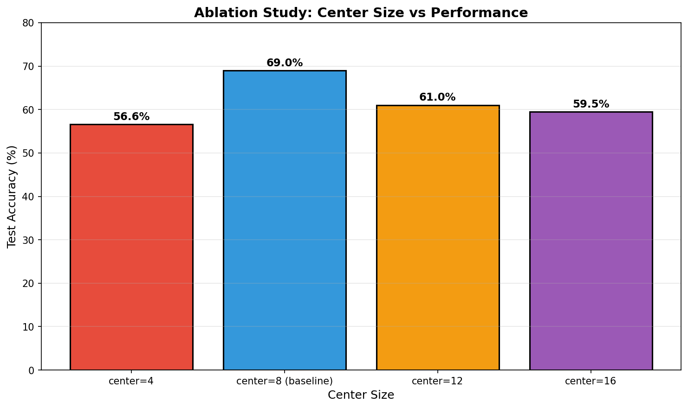

🧩 Module Details
Architecture: Standard ResNet18 without any attention mechanisms.
Input (32×32)
→
Conv1 + BN + ReLU
→
Layer1-4
→
AvgPool + FC
→
Output
Principle
Plain CNN baseline. All pixels processed uniformly at same resolution. No attention or selective processing.
Innovation
None - serves as control experiment for comparison.
Why It's Important
Establishes baseline performance to measure improvements. All subsequent modules aim to beat this 60% benchmark.
Architecture: ResNet18 with fovea attention layer at fixed center position (8×8).
Input (32×32)
→
Conv1 + L1-L2
→
Fovea Attention
→
L3-L4
→
Output
Principle
Inspired by human fovea: center region (8×8) processed at full resolution, periphery downsampled 2× before processing. Both features combined.
Innovation
- Selective high-resolution processing reduces computation
- Center fixed at image center (no learned positioning)
- Uses spatial masking instead of zero-padding (bug fix in original implementation)
Key Insight
Processing only 6.25% of pixels at full resolution (center) while maintaining peripheral context achieves better results than uniform processing.
Code: Center patch extracted, upsampled, blended with downsampled periphery using spatial mask.
Architecture: FoveaResNet with additional network to predict optimal center location.
Input
→
ResNet Backbone
→
GlimpseLocator
→
Fovea (learned center)
→
Output
Principle
GlimpseLocator network predicts (cx, cy) coordinates from feature maps, enabling dynamic center selection based on image content.
Innovation
- Soft-argmax attention for differentiable center prediction
- Center-biased self-supervised loss
- Dynamic gaze control (content-dependent)
Observation
Performance (63.63%) < M2 fixed (68.99%). The network quickly converges to center-biased predictions, suggesting fixed center is actually near-optimal for CIFAR-10.
Architecture: Vision Transformer with MC Dropout for uncertainty estimation.
Input
→
Patch Embed
→
Transformer Blocks
→
MC Dropout
→
Cls + Uncertainty Heads
→
Logits + Uncertainty
Principle
Multiple forward passes with dropout enabled (MC Dropout). Mean = prediction, Std = uncertainty. Combines classification with confidence estimation.
Innovation
- Bayesian uncertainty via MC Dropout (5 passes)
- Uncertainty head predicting log variance
- Gaussian NLL loss combining classification and uncertainty
Key Insight
ViT architecture outperforms ResNet for this task. Uncertainty estimation adds value but doesn't match RL-based attention.
Architecture: 3-level pyramid with learnable fusion weights.
Input
→
Level 1 (1×)
+
Level 2 (2×↓)
+
Level 3 (4×↓)
→
Learnable Weights
→
Transformer
→
Output
Principle
Three resolution levels processed in parallel. Learnable weights determine fusion: w1=0.61, w2=0.23, w3=0.17. High-resolution dominates.
Innovation
- 3-level pyramid instead of 2 (center/periphery)
- Softmax-weighted fusion
- Diversity regularization encourages different weights
Key Insight
Model learns that high-resolution (61%) is most important, with diminishing returns from even finer sampling.
Architecture: Combined MRAM pyramid with UncertaintyViT heads.
Principle
Attempts to combine benefits of multi-resolution processing with uncertainty estimation.
Result
Worse than individual components! Shows that combining complex mechanisms requires careful architecture design. Interaction effects can be negative.
Architecture: FoveaResNet backbone with PPO reinforcement learning for optimal gaze selection.
Input
→
FoveaResNet (frozen)
→
PPO Policy
→
Optimal Glimpse
→
Classification
→
Action + Reward
Principle
Reinforcement learning optimizes center location directly. Policy network outputs (cx, cy). Reward = classification accuracy. End-to-end differentiable.
Innovation
- PPO (Proximal Policy Optimization) for stable policy updates
- Clipped surrogate objective prevents catastrophic updates
- Entropy bonus encourages exploration
- GAE (Generalized Advantage Estimation) for variance reduction
🎯 Key Finding
RL-based active gaze (84.80%) vastly outperforms all passive methods. The network learns to place the fovea at the most informative regions dynamically.
RL Hyperparameters
| Algorithm | PPO |
| Clip Epsilon | 0.2 |
| Entropy Coefficient | 0.01 |
| Discount (γ) | 0.99 |
| GAE (λ) | 0.95 |
| Policy LR | 3×10⁻⁴ |
Note: Longer training (20 vs default epochs) significantly improves plain ResNet. Shows importance of training duration.
Note: Longer training allows fovea mechanism to fully converge. Performance approaches M1 Extended.
⚙️ Technical Details
Training Configuration
| Parameter | Value |
|---|
| Optimizer | Adam |
| Learning Rate | 0.001 |
| Batch Size | 128 |
| Weight Decay | 0 (default) |
| Scheduler | StepLR (step=10, gamma=0.5) |
| Early Stopping | Patience = 5 epochs |
| Device | Apple M-series GPU (MPS) |
| Data Augmentation | RandomCrop + HorizontalFlip |
| Normalization | CIFAR-10 mean/std |
Module Architectures
Fovea Attention (M2)
def fovea_attention(x, center_size=8):
# Center: full resolution
center_patch = x[:, :, h-half:h+half, w-half:w+half]
# Periphery: 2x downsampled
periph = avg_pool2d(x, kernel=2)
periph_up = interpolate(periph, size=original)
# Blend with spatial mask
mask = create_center_mask(center_size)
output = mask * center_full + (1-mask) * periph_up
GlimpseLocator (M9)
class GlimpseLocator(nn.Module):
def forward(self, features):
# Attention over spatial locations
attn = spatial_attention(features) # [B, 1, H, W]
# Soft-argmax for differentiable center
coords = (attn * grid).sum(dim=[2,3])
return torch.tanh(co
Uncertainty Estimation (Module 3)
# MC Dropout
logits_list = []
for _ in range(n_passes):
model.train() # Enable dropout
logits_list.append(model(x))
mean = stack(logits_list).mean(dim=0)
uncertainty = stack(logits_list).std(dim=0)
PPO Policy (M14)
# PPO Loss
ratio = exp(new_log_prob - old_log_prob)
surr1 = ratio * advantages
surr2 = clamp(ratio, 1-eps, 1+eps) * advantages
policy_loss = -min(surr1, surr2).mean()
entropy_loss = -entropy.mean()
total_loss = policy_loss + 0.01 * entropy_loss
Model Parameters
| Model | Parameters |
|---|
| ResNet18 | 11.2M |
| FoveaResNet | 11.5M |
| LearnableFovea | 11.6M |
| UncertaintyViT | 2.7M |
| MRAM | 3.7M |
| PPO Policy | ~65K |
🔬 Ablation Study
Center Size Analysis
Optimal center size balances high-resolution information vs peripheral context.
| Center Size | Test Acc | Analysis |
|---|
| 4×4 (1.6%) |
56.58% |
Too small - limited high-resolution region |
| 8×8 (6.25%) |
68.99% |
Optimal - best balance |
| 12×12 (14%) |
61.03% |
Too large - reduced periphery |
| 16×16 (25%) |
59.50% |
Almost no periphery |
Key Finding: Center = 8×8 covers 6.25% of pixels but captures most useful information.
This is consistent with human fovea covering ~2° of visual field (~1-2% of total visual angle).
📊 Center Size vs Performance

Other Ablation Studies
Architecture Type
| Backbone | With Fovea | Improvement |
|---|
| ResNet18 | 68.99% | +8.99% |
| ViT | 41.16% | -18.84% |
Note: ViT underperforms ResNet on CIFAR-10 (small images).
Training Duration
| Epochs | M1 (ResNet) | M2 (Fovea) |
|---|
| 3-5 | ~60% | ~69% |
| 20 | 82.20% | 81.93% |
Longer training significantly benefits both architectures.